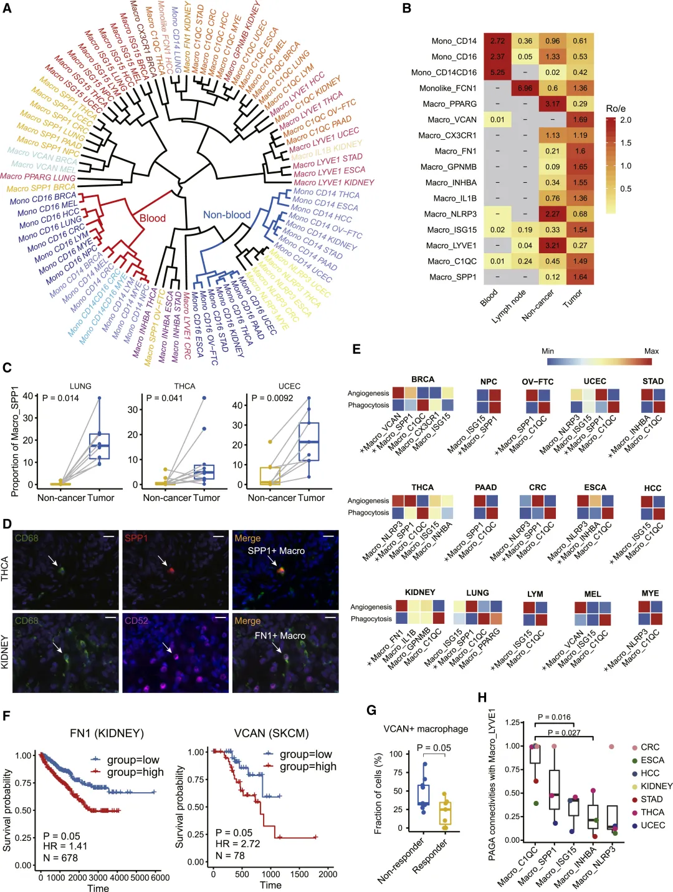
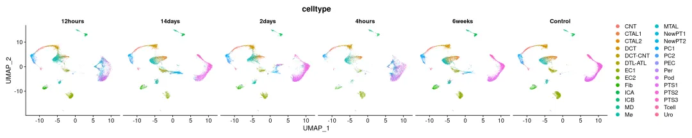
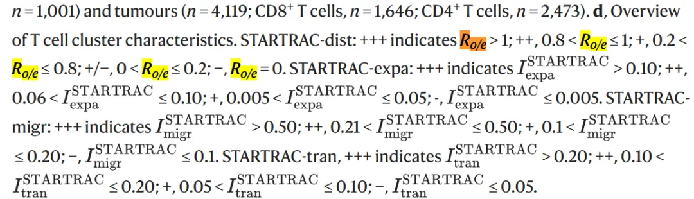
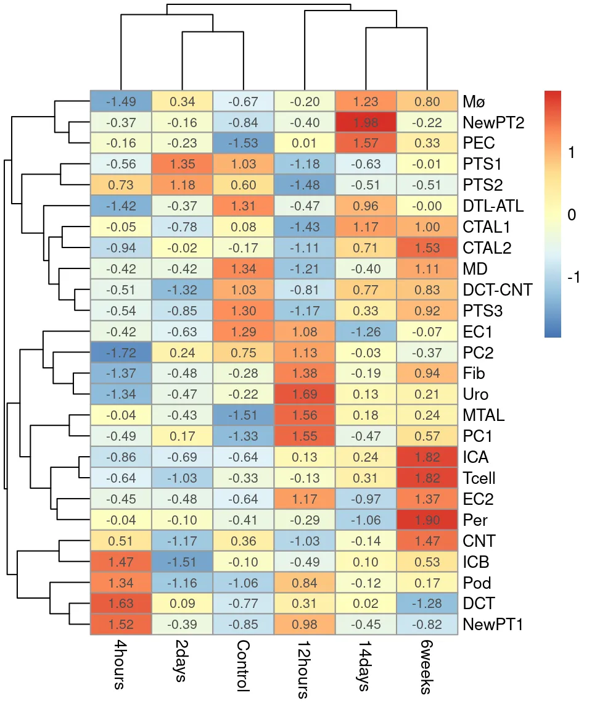
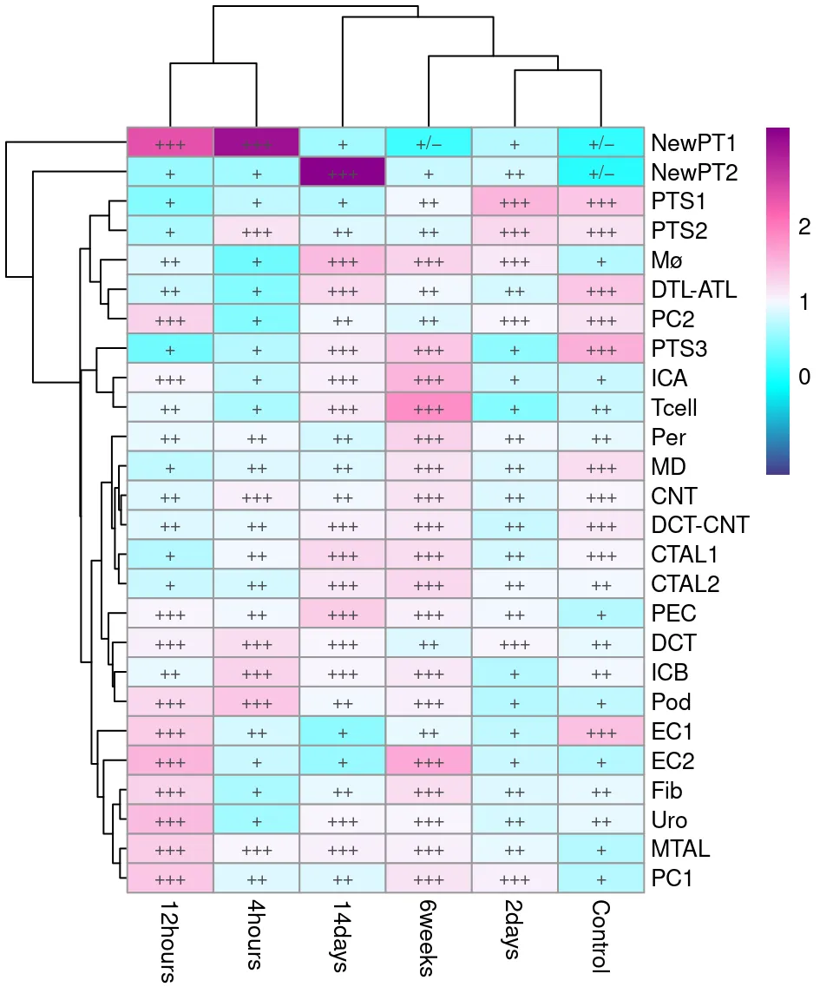
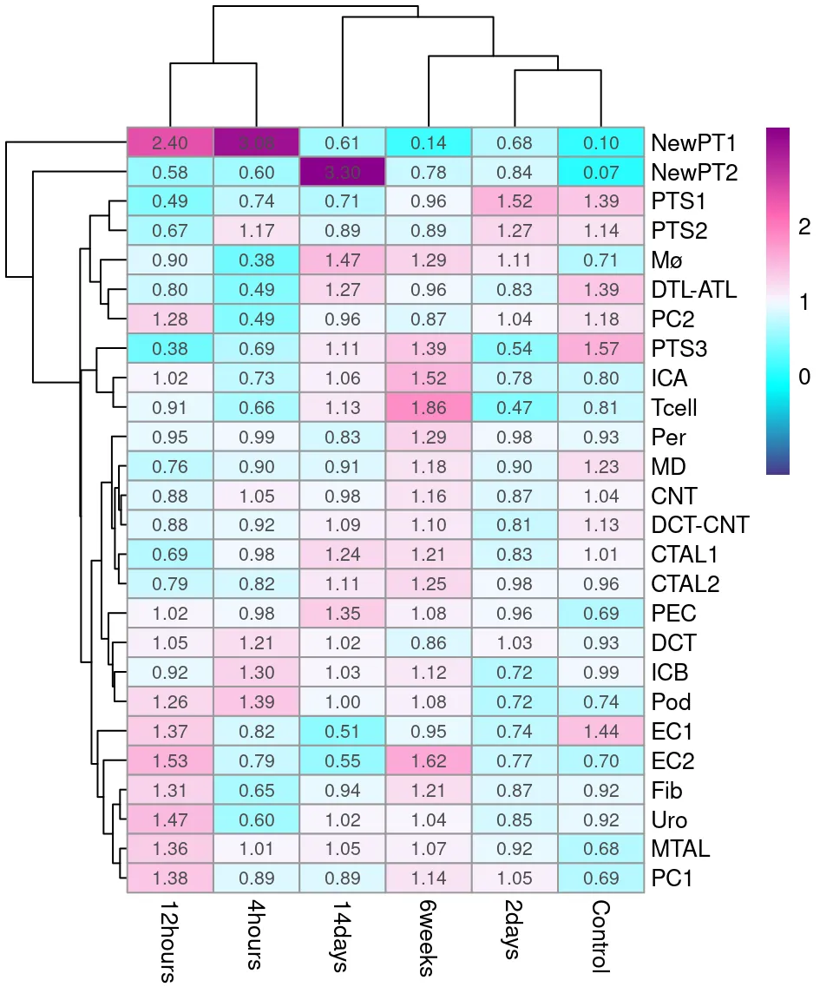
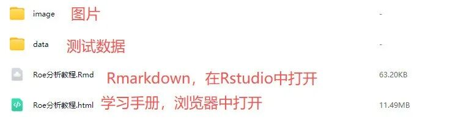

跟着《Nature》和《Cell》学Ro/e分析
原文：https://mp.weixin.qq.com/s?__biz=MzAwMzIzOTk5OQ==&mid=2247532034&idx=1&sn=f5379f62dfcfd8bf99ee2fbea8e8fc8f&chksm=9b3c0752ac4b8e44e737b9bd9ad6202d009920374f303487b70eae21e0e35a224d1c6a7bf5c7#rd 合集：单细胞教程全收录
一、Ro/e
此前我们分享过沉浸式统计细胞比例，算是系统性的为大家解决了单细胞/空转过程中遇到的细胞比例统计的问题。第一次提到Ro/e处（不保真，大家发现有更早的参考文献欢迎来纠错~）是张泽民院士在2019年的一封发表在《Nature》的letter上提到的ratios of observed cell numbers to random expectations(Ro/e)方法也能够有效的帮助大家判断细胞类型在对应分组/组织中究竟是趋向/浸润，还是驱离/排斥。并且不用做我们此前基于ggsignif两两比较，直接用Ro/e是否小于1即可轻松判断。非常的好用，张院士团队2021年发表的一篇《Cell》上继续沿用了Ro/e的概念。

上图B即为Ro/e评估各巨噬细胞与单核细胞在血液、淋巴结、非肿瘤、肿瘤组织中的浸润情况。作者对于这张图的描述可供大家参考，对于Ro/e score大于1的细胞来说，你可以描述其在对应组织中“enriched”：
We next quantified tissue enrichment of macrophage subsets based on the Ro/e analysis (Figures 6B and S7F). The LYVE1+ macrophages identified within multiple cancer types were *preferentially enriched in non-cancer tissues, resembling the reported tissue-resident interstitial macrophages更多单细胞空转教程可见：这可能是全网最全的scRNA-seq分析教程！单细胞+空间转录组，Python全流程实战教学！
如果需要单细胞数据分析教学 、生信热点全文复现 、自测数据个性化分析 辅导、常态化实验学习，欢迎联系客服微信[Biomamba_zhushou]
二、Ro/e分析实操
更多单细胞教程可见：[这可能是全网最全的scRNA-seq分析教程！](<https://mp.weixin.qq.com/s?__biz=MzAwMzIzOTk5OQ==&mid=2247531388&idx=3&sn=dfaf8cac9db70bb408206fb3da27ffda&scene=21#wechat_redirect>)
Ro/e分析实际靠Startrac::calTissueDist一个函数就可以搞定[3]。
1、安装
if(!require(devtools))install.packages("devtools")
## Loading required package: devtools
## Loading required package: usethis
if(!require(Startrac))devtools::install_github("Japrin/STARTRAC")
## Loading required package: Startrac
##
## Attaching package: 'Startrac'
## The following object is masked from 'package:graphics':
##
## plot
## The following object is masked from 'package:base':
##
## plot
if(!require(Seurat))install.packages('Seurat')
## Loading required package: Seurat
## Loading required package: SeuratObject
## Loading required package: sp
## 'SeuratObject' was built with package 'Matrix' 1.7.1 but the current
## version is 1.7.2; it is recomended that you reinstall 'SeuratObject' as
## the ABI for 'Matrix' may have changed
##
## Attaching package: 'SeuratObject'
## The following objects are masked from 'package:base':
##
## intersect, t
if(!require(pheatmap))install.packages('pheatmap')
## Loading required package: pheatmap
2、测试数据
这里利用我们在多样本整合 的测试数据，大家需要熟练掌握Seurat分类变量处理技巧
# 读取数据：
scRNA <-readRDS('data/iri.intergrate.rds')
# 查看数据分组:
names(scRNA@meta.data)
## [1] "orig.ident" "nCount_RNA" "nFeature_RNA" "Group" "Replicates"
## [6] "celltype"
# 可以看到，分组Group收录信息为“时间”，celltype中收录的是各类肾脏细胞类型的注释
DimPlot(scRNA,split.by ='Group',group.by ='celltype')
## Rasterizing points since number of points exceeds 100,000.
## To disable this behavior set `raster=FALSE`

# 看一下样本信息，共有24个样本：
unique(scRNA$orig.ident)
## [1] "IRIsham1b1" "IRIsham1b2" "IRIsham2" "IRIsham3" "IRI4h1"
## [6] "IRI4h2" "IRI4h3" "IRI12h1b1" "IRI12h1b2" "IRI12h2"
## [11] "IRI12h3" "IRI2d1b1" "IRI2d1b2" "IRI2d2b1" "IRI2d2b2"
## [16] "IRI2d3" "IRI14d1b1" "IRI14d1b2" "IRI14d2" "IRI14d3"
## [21] "IRI6w1b1" "IRI6w1b2" "IRI6w2" "IRI6w3"
3、利用Ro/e判断各细胞类型是否存在Group偏好性
当然你也可以换成其它分组变量，这里用Group变量做展示：
# 取出注释信息：
data4roe <- scRNA@meta.data
# 计算Ro/e，实际计算速度与细胞数量关系不表达，算起来非常快：
Roe <-calTissueDist(data4roe,
byPatient = F,
colname.cluster ="celltype", # 不同细胞分群，为结果中Ro/e矩阵的“行名”
colname.patient ="orig.ident", # 不同样本
colname.tissue ="Group", # 不同Group，为结果中Ro/e矩阵的“列名”
method ="chisq", # 可选："chisq", "fisher", and "freq"
min.rowSum =0) # 整行的和为0则忽略
# 看一下Ro/e的结果：
Roe
##
## 12hours 14days 2days 4hours 6weeks Control
## CNT 0.88148702 0.98191497 0.86562541 1.05435053 1.16251005 1.03724191
## CTAL1 0.68625941 1.24478872 0.82650372 0.98378159 1.20887848 1.01098127
## CTAL2 0.79395999 1.11096338 0.98292459 0.82361804 1.25350451 0.95791222
## DCT 1.05444185 1.01931946 1.02814400 1.21237656 0.86452226 0.92512459
## DCT-CNT 0.87907213 1.09053897 0.81031576 0.91951120 1.09965831 1.12652994
## DTL-ATL 0.80220019 1.27050150 0.83465742 0.49115528 0.95637973 1.38574724
## EC1 1.36624832 0.51338323 0.74395170 0.82066046 0.94581605 1.44184156
## EC2 1.52526972 0.54944067 0.77109027 0.78520784 1.61526303 0.70030315
## Fib 1.31454773 0.93720622 0.86703501 0.65364226 1.20891835 0.91535150
## ICA 1.02228247 1.05635158 0.78061108 0.73239778 1.52200039 0.79609171
## ICB 0.91595561 1.03192135 0.71637824 1.30252471 1.11719168 0.99345999
## MD 0.75835840 0.90728152 0.90287660 0.90198234 1.18286954 1.22553051
## Mø 0.89567008 1.46798999 1.11009629 0.38065767 1.29469300 0.70775090
## MTAL 1.35867171 1.05406513 0.92075760 1.00678495 1.06674608 0.68206582
## NewPT1 2.40264166 0.60835720 0.68436927 3.07523300 0.14222457 0.10139358
## NewPT2 0.57553612 3.30389487 0.84348928 0.60451253 0.78004623 0.06720185
## PC1 1.37650980 0.89497604 1.04731593 0.89017782 1.14378843 0.68868614
## PC2 1.28421808 0.96072906 1.03700943 0.49129058 0.86761755 1.17650468
## PEC 1.01517699 1.34561561 0.96319973 0.97838094 1.08266279 0.68758650
## Per 0.95058713 0.83166644 0.98089321 0.99044817 1.29039517 0.93303929
## Pod 1.25815733 0.99792791 0.71722654 1.39218695 1.07570466 0.74432723
## PTS1 0.48500751 0.70902853 1.52208758 0.73883549 0.96206760 1.38917484
## PTS2 0.66554931 0.88643427 1.27288491 1.17081332 0.88609196 1.13943257
## PTS3 0.38229468 1.10626548 0.53742815 0.68802787 1.39473771 1.57457700
## Tcell 0.90950134 1.12605636 0.47182706 0.66346338 1.85557531 0.81322562
## Uro 1.46845794 1.02166774 0.84986317 0.59900284 1.04430465 0.91967296
原文对于Ro/e结果的判断如下，简单来说，是否大于1是判断是否enrichment的标准：

4、绘图
# 先来张最朴实无华的图：
pheatmap(Roe,display_numbers = T,scale ='row')

# 使用Biomamba祖传渐变色创建连续颜色梯度：
my_palette <-colorRampPalette(c("#483D8B","#00FFFF","#F8F8FF","#FF69B4","#8B008B"))(100)
# 设置以1为中心的对称断点
max_abs_deviation <-max(abs(Roe -1), na.rm =TRUE)
breaks <-seq(1- max_abs_deviation, 1+ max_abs_deviation,
length.out =101)
# 定义Ro/e分级标准，生成与Roe同维度的标注矩阵（关键步骤）
# 根据Ro/e值替换为对应符号
anno_matrix <-ifelse(
Roe >1, "+++",
ifelse(Roe >0.8& Roe <=1, "++",
ifelse(Roe >0.2& Roe <=0.8, "+",
ifelse(Roe >0& Roe <=0.2, "+/−", "−")))
)
# 显示加减号的热图：
pheatmap(Roe,
color = my_palette,
breaks = breaks,legend_breaks =c(-4,-2,0,1,2,4,6),#c(fivenum(Roe),1)
display_numbers = anno_matrix # 传递标注矩阵，显示符号而非数值
)

# 显示实际Ro/e score的热图：
pheatmap(Roe,
color = my_palette,
breaks = breaks,legend_breaks =c(-4,-2,0,1,2,4,6),#c(fivenum(Roe),1)
display_numbers = T # 显示数值
)

ok，非常简单，大家可以去做自己的Ro/e分析啦
三、准备工作
1、编程基础
整个分析过程中需要掌握R语言 和Linux 的，因此，笔者已整理过一些大家常用的R语言与Linux的命令供大家学习。
Linux目前我们已出了一系列教程： 十小时学会Linux B站视频同步播出
R语言可谓是占据生信的大半壁江山： R语言基础学习手册 可配套视频课程学习： 5.5h入门R语言
2、硬件基础
教程制作过程中发现，你至少需要准备一个4线程、128GB运行内存的电脑来运行以下测试数据，不然可能有电脑死机的风险：不推荐用自己的电脑做生信。实战的数据分析可能需要数百GB 的内存，如果你的设备不能满足，可以考虑下列服务器的租赁。最便宜的版本即可帮助你们完成90%以上的单细胞分析需求(土豪随意)：
选择西柚云的11个理由 足够支持你完成硕博生涯的生信环境 忘记宣传了，独享用户连技术支持都是独享的
参考
[1]https://www.nature.com/articles/s41586-018-0694-x#Sec28 [2]https://www.cell.com/cell/fulltext/S0092-8674(21)00010-6?_returnURL=https%3A%2F%2Flinkinghub.elsevier.com%2Fretrieve%2Fpii%2FS0092867421000106%3Fshowall%3Dtrue# [3]https://github.com/Japrin/STARTRAC
欢迎致谢
如果以上内容对你有帮助，欢迎在文章的Acknowledgement中加上这一段，联系客服微信可以发放奖励：
ince Biomamba and his wechat public account team produce bioinformatics tutorials and share code with annotation, we thank Biomamba for their guidance in bioinformatics and data analysis for the current study.
演示环境与测试文件
一切不给测试文件和分析环境版本的教程都是耍流氓，本推送的代码和测试文件可以在以下链接中下载：
通过网盘分享的文件：
https://pan.baidu.com/s/1y_nmhAp3RHUMnz7HEUMDew
提取码: i3hv

本教程基于Linux环境演示，计算资源不足的同学可参考： 足够支持你完成硕博生涯的生信环境 忘记宣传了，独享用户连技术支持都是独享的 RTX5090、4080S、5070显卡上机访问链接：https://biomamba.xiyoucloud.net/欢迎联系客服微信[Biomamba_yunying]获取帮助 如果你对下面的教程比较迷茫，那么你可以先行学习编程教程：十小时学会Linux 生信Linux及服务器使用技巧5.5h入门R语言 R语言演示环境(趁开学前| 入手足够完成硕博生涯的生信环境)：sessionInfo()
## R version 4.4.2 (2024-10-31)
## Platform: x86_64-pc-linux-gnu
## Running under: Ubuntu 20.04.4 LTS
##
## Matrix products: default
## BLAS: /usr/lib/x86_64-linux-gnu/openblas-pthread/libblas.so.3
## LAPACK: /usr/lib/x86_64-linux-gnu/openblas-pthread/liblapack.so.3; LAPACK version 3.9.0
##
## locale:
## [1] LC_CTYPE=en_US.UTF-8 LC_NUMERIC=C
## [3] LC_TIME=en_US.UTF-8 LC_COLLATE=en_US.UTF-8
## [5] LC_MONETARY=en_US.UTF-8 LC_MESSAGES=en_US.UTF-8
## [7] LC_PAPER=en_US.UTF-8 LC_NAME=C
## [9] LC_ADDRESS=C LC_TELEPHONE=C
## [11] LC_MEASUREMENT=en_US.UTF-8 LC_IDENTIFICATION=C
##
## time zone: Etc/UTC
## tzcode source: system (glibc)
##
## attached base packages:
## [1] stats graphics grDevices utils datasets methods base
##
## other attached packages:
## [1] pheatmap_1.0.12 Seurat_5.2.1 SeuratObject_5.0.2 sp_2.2-0
## [5] Startrac_0.1.0 devtools_2.4.5 usethis_3.1.0
##
## loaded via a namespace (and not attached):
## [1] fs_1.6.5 matrixStats_1.5.0
## [3] spatstat.sparse_3.1-0 httr_1.4.7
## [5] RColorBrewer_1.1-3 doParallel_1.0.17
## [7] dynamicTreeCut_1.63-1 profvis_0.4.0
## [9] tools_4.4.2 sctransform_0.4.1
## [11] backports_1.5.0 R6_2.5.1
## [13] lazyeval_0.2.2 uwot_0.2.2
## [15] GetoptLong_1.0.5 withr_3.0.2
## [17] urlchecker_1.0.1 gridExtra_2.3
## [19] progressr_0.15.1 cli_3.6.3
## [21] Biobase_2.66.0 spatstat.explore_3.4-3
## [23] fastDummies_1.7.5 labeling_0.4.3
## [25] sass_0.4.9 mvtnorm_1.3-3
## [27] spatstat.data_3.1-6 readr_2.1.5
## [29] ggridges_0.5.6 pbapply_1.7-2
## [31] sscVis_0.1.0 parallelly_1.42.0
## [33] sessioninfo_1.2.2 maps_3.4.2.1
## [35] limma_3.62.2 rstudioapi_0.17.1
## [37] impute_1.76.0 generics_0.1.3
## [39] shape_1.4.6.1 ica_1.0-3
## [41] spatstat.random_3.4-1 car_3.1-3
## [43] dplyr_1.1.4 dendextend_1.19.0
## [45] Matrix_1.7-2 cherryblossom_0.1.0
## [47] ggbeeswarm_0.7.2 S4Vectors_0.44.0
## [49] abind_1.4-8 lifecycle_1.0.4
## [51] yaml_2.3.10 carData_3.0-5
## [53] SummarizedExperiment_1.36.0 SparseArray_1.6.0
## [55] Rtsne_0.17 grid_4.4.2
## [57] promises_1.3.2 crayon_1.5.3
## [59] miniUI_0.1.1.1 lattice_0.22-6
## [61] cowplot_1.1.3 pillar_1.10.1
## [63] knitr_1.49 ComplexHeatmap_2.12.1
## [65] GenomicRanges_1.58.0 rjson_0.2.23
## [67] future.apply_1.11.3 codetools_0.2-20
## [69] glue_1.8.0 spatstat.univar_3.1-3
## [71] data.table_1.16.4 remotes_2.5.0
## [73] vctrs_0.6.5 png_0.1-8
## [75] spam_2.11-1 gtable_0.3.6
## [77] cachem_1.1.0 ks_1.14.3
## [79] xfun_0.50 S4Arrays_1.6.0
## [81] mime_0.12 pracma_2.4.4
## [83] survival_3.8-3 SingleCellExperiment_1.28.1
## [85] iterators_1.0.14 fields_16.3
## [87] statmod_1.5.0 ellipsis_0.3.2
## [89] fitdistrplus_1.2-2 ROCR_1.0-11
## [91] nlme_3.1-168 RcppAnnoy_0.0.22
## [93] GenomeInfoDb_1.42.1 bslib_0.9.0
## [95] irlba_2.3.5.1 vipor_0.4.7
## [97] KernSmooth_2.23-26 colorspace_2.1-1
## [99] BiocGenerics_0.52.0 ggrastr_1.0.2
## [101] tidyselect_1.2.1 compiler_4.4.2
## [103] DelayedArray_0.32.0 plotly_4.10.4
## [105] scales_1.3.0 lmtest_0.9-40
## [107] stringr_1.5.1 digest_0.6.37
## [109] goftest_1.2-3 spatstat.utils_3.1-4
## [111] rmarkdown_2.29 XVector_0.46.0
## [113] RhpcBLASctl_0.23-42 htmltools_0.5.8.1
## [115] pkgconfig_2.0.3 sparseMatrixStats_1.18.0
## [117] usdata_0.3.1 MatrixGenerics_1.18.1
## [119] fastmap_1.2.0 rlang_1.1.5
## [121] GlobalOptions_0.1.2 htmlwidgets_1.6.4
## [123] UCSC.utils_1.2.0 shiny_1.10.0
## [125] DelayedMatrixStats_1.28.1 openintro_2.5.0
## [127] farver_2.1.2 jquerylib_0.1.4
## [129] zoo_1.8-12 jsonlite_1.8.9
## [131] airports_0.1.0 mclust_6.1.1
## [133] magrittr_2.0.3 Formula_1.2-5
## [135] GenomeInfoDbData_1.2.13 dotCall64_1.2
## [137] patchwork_1.3.0 munsell_0.5.1
## [139] Rcpp_1.0.14 viridis_0.6.5
## [141] reticulate_1.43.0.9001 stringi_1.8.4
## [143] zlibbioc_1.52.0 MASS_7.3-64
## [145] plyr_1.8.9 pkgbuild_1.4.6
## [147] parallel_4.4.2 listenv_0.9.1
## [149] ggrepel_0.9.6 deldir_2.0-4
## [151] splines_4.4.2 tensor_1.5
## [153] hms_1.1.3 circlize_0.4.16
## [155] igraph_2.1.4 ggpubr_0.6.0
## [157] spatstat.geom_3.4-1 ggsignif_0.6.4
## [159] RcppHNSW_0.6.0 reshape2_1.4.4
## [161] stats4_4.4.2 pkgload_1.4.0
## [163] evaluate_1.0.3 tzdb_0.4.0
## [165] foreach_1.5.2 httpuv_1.6.15
## [167] RANN_2.6.2 tidyr_1.3.1
## [169] purrr_1.0.2 polyclip_1.10-7
## [171] future_1.34.0 clue_0.3-66
## [173] scattermore_1.2 ggplot2_3.5.1
## [175] gridBase_0.4-7 broom_1.0.7
## [177] xtable_1.8-4 RSpectra_0.16-2
## [179] rstatix_0.7.2 later_1.4.1
## [181] viridisLite_0.4.2 tibble_3.2.1
## [183] moduleColor_1.8-4 memoise_2.0.1
## [185] beeswarm_0.4.0 IRanges_2.40.1
## [187] cluster_2.1.8 globals_0.16.3

如何联系我们

 留一个领取资料、开箱即用的单细胞分析镜像的微信号[Biomamba_zhushou]，方便各位随时交流。同时我们也构建了交流群矩阵，欢迎大家入群讨论。
大家可以阅读完这几篇之后添加给生信入门初学者的小贴士
没有检索，就没有发言权
留一个领取资料、开箱即用的单细胞分析镜像的微信号[Biomamba_zhushou]，方便各位随时交流。同时我们也构建了交流群矩阵，欢迎大家入群讨论。
大家可以阅读完这几篇之后添加给生信入门初学者的小贴士
没有检索，就没有发言权
已有生信基地联系方式的同学无需重复添加

 您点的每个赞和在看，我都认真当成了喜欢
您点的每个赞和在看，我都认真当成了喜欢